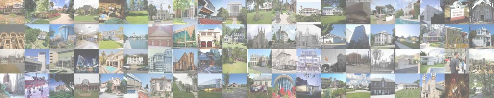

MIT CSAIL6.S058: Introduction to Computer Vision |
||
Spring 2025 |
||

Course Overview
This course provides an introduction to computer vision, covering topics from early vision to mid- and high-level vision, including low-level image analysis, edge detection, image transformations for image synthesis, methods for 3D scene reconstruction, motion analysis and tracking. Additionally, presents basics of machine learning, convolutional neural networks, and transformers in the context of image and video data for object classification, detection, and segmentation.
Announcements
Make sure to check out the course info below, as well as the schedule for updates. The course units are 4-0-11 (Undergraduate Level, CI-M Subject). The
prerequisites of this course are (18.06 or 18.C06), and (6.1200, 6.3700, 6.3800, 18.05, or 18.600). Good luck with your semester!
Classroom recordings will be posted here.
Course Information


CI-M Instructors
Administrative Assistant
Teaching Assistants
Please use the course Piazza page for all communication with the teaching staff.
Time and Classroom
01:00 pm - 2:30 pm every Tuesday and Thursday in 34-101.Office Hours (All times in ET)
Please direct all problem set questions to TAs rather than instructors!
Instructors
TBDTAs
TBDGrading Policy
Psets: 40%Midterm: 20%
Final project: 40%
• Proposal: 5%
• Report: 17.5%
• Presentation: 7.5%
• CI-M: 10%
Note: This part of the grade is based on participation in communication recitations (attendance is mandatory) and specific CI-M-related tasks (mostly tied to the project proposal) as part of the CI-M requirement for the course. Failure to complete the CI-M component will result in a failing grade.